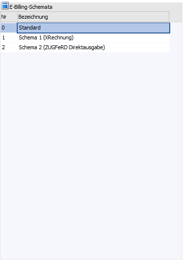
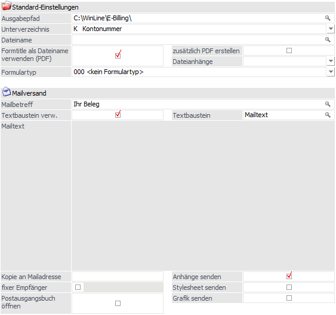
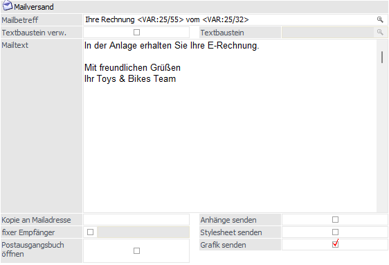

Auf der linken Seite werden in der Bildschirmtabelle alle Schemata angezeigt, die vom Benutzer oder die im Zuge der E-Billing-Umstellung automatisch von der WinLine angelegt wurden.
Es wird immer vom Programm das Schema mit der Nummer "0" und der Bezeichnung "Standard" angelegt.

In diesem Schema werden die Standard-Einstellungen verwaltet, die beim E-Billing-Export auch für alle anderen Schemata greifen, wenn dort keine indiv. Ausgabe- und Maileinstellungen definiert wurden.

Ø Ausgabepfad
In diesem Eingabefeld kann ein Ausgabepfad für ein Verzeichnis angegeben werden, in welches die erzeugten E-Rechnungen abgelegt werden sollen. Als Standardpfad wird die WinLine hier das Serververzeichnis vorschlagen und dort einen Ordner "E-Rechnung" anlegen.
Ø Unterverzeichnisse
Zusätzlich zum Ausgabepfad kann ein weiteres "Unterverzeichnis" zur Ablage verwendet werden. Über die Auswahllistbox kann bestimmt werden ob,
ü Auswahl "Kontonummer": für jede vorhandene Personenkontonummer ein Unterverzeichnis mit der Kontonummer als Verzeichnisnamen erzeugt/verwendet werden soll.
ü Auswahl "Zusatzfelder": ein Unterverzeichnis mit dem Inhalt des angegebenen Zusatzfeldes (pro Personenkonto) erzeugt/verwendet werden soll. Ist der Inhalt des verwendeten Zusatzfeldes leer, so wird die Personenkontonummer als Verzeichnisname verwendet.
Ø Dateiname
In diesem Feld kann der Dateiname aus Texten bzw. Variablen dynamisch zusammengesetzt werden. Zur Suche bzw. Auswahl der Variablen steht der Matchcode zur Verfügung. Zu beachten ist hierbei, dass der Matchcode in diesem Fall den zuvor enthaltenen Wert des Feldes nicht ersetzt, sondern die neue Variable hinzufügt. Kommt es durch die Hinterlegung zu Dateinamen, die nicht eindeutig sind, wird an einen bereits bestehenden Dateinamen ein "Zähler" angehängt.
Hinweis
Beim Archivieren der erzeugten Dateien wird die Bezeichnung des jeweiligen Exporttyps verwendet. Für Exporttypen mit, für den einzelnen Export ausgewählter Exportvorlage, wird diese in Klammern hinzugefügt. Im Falle eines exportierten Dateianhanges in einer eigenen Datei wird der Text "Dateianhang" und wiederum in Klammern die verwendete Vorlage hinzugefügt.
Ø Formtitle als Dateiname verwenden (PDF)
Durch Aktivieren dieser Option wird der Name des Dokuments, der mit der Funktion "FormTitle=" im entsprechenden Rechnungsformular erzeugt wurde bzw. über die Seiteneinstellungen des Formulars definiert ist, als Dateiname für den Export verwendet.
Hinweis
Diese Option kann für die PDF-Exporttypen "4 PDF-Ausgabe signiert" bzw. "11 PDF-Ausgabe unsigniert" und für "ZUGFeRD/Factur-X" als PDF/A-3 Dateien verwendet werden.
Ø zusätzlich PDF erstellen
Bei reinen XML-Formaten kann neben der XML-Datei zusätzlich eine Rechnungskopie als PDF erstellt werden. Dieses Rechnungsabbild kann zum Lesen und Prüfen der jeweiligen Rechnung, ohne aufwendige Hilfsmittel oder Darstellungswerkzeuge, verwendet werden. Diese Option hat aber nur dann eine Auswirkung, wenn für den Typen nicht sowieso ein PDF erzeugt wird.
Ø Dateianhänge
Aus dieser Auswahllistbox kann eine Exportvorlage gewählt werden, die für den Export von Dateianhängen verwendet werden soll. Dies sind in der Regel Dokumente, die im Belegerfassen-Hauptfenster per drag & drop auf den Beleg gezogen und somit archiviert wurden. Mit dieser Option wird zusätzlich zum XML-Beleg eine zweite XML-Datei erzeugt.
Soll der Dateianhang innerhalb der XML-Rechnung enthalten sein (siehe Kapitel "Dateianhänge in der E-Rechnung" übermitteln"), kann das Feld freigelassen werden. Die Exportvorlagen für Dateianhänge müssen die Exportkennzeichen "11 Dateianhang hier einfügen" und "12 Dateianhang" hinterlegt haben.
Ø Formulartyp
Für E-Billing-Belege können eigene Formulartypen verwendet werden. Im Archiv kann im späteren Verlauf komfortabel auf die Formulartypen eingegrenzt und gesucht werden.
Mailversand

Ø Mailbetreff
Eingabe des Mailbetreffs. Dieser kann auch über den Matchcode durch entsprechende Variablen zusammengesetzt werden, die als Platzhalter eingefügt werden. Z.B. <VAR:25/55> für die Rechnungsnummer.
Ø Textbaustein verw.
Wird diese Option aktiviert, wird das Matchcode-Eingabefeld "Textbaustein" freigeschaltet.
Ø Textbaustein
Wurde die Option "Textbaustein verwenden" aktiviert, kann an dieser Stelle ein Textbaustein aus dem Menüpunkt "START/Optionen/Textbausteine/Textbausteine" per Matchcode hinterlegt werden, der dann entsprechend als Mailtext eingefügt wird.
Es können Platzhalter für Variablen in der Form <VAR:xx/yy> im Textbaustein definiert werden. Diese werden entsprechend aufgelöst. Es können alle Vars verwendet werden, die auch im Matchcode des Mailbetreffs ausgewählt werden können.
Ø Mailtext
Eingabefeld für den Mailtext, der übergeben wird. Die Eingabemöglichkeit steht nicht zur Verfügung, wenn bereits ein Textbaustein als Mailtext verwendet wird.
Es können Platzhalter für Variablen in der Form <VAR:xx/yy> im Mailtext definiert werden. Diese werden entsprechend aufgelöst. Es können alle Vars verwendet werden, die auch im Matchcode des Mailbetreffs ausgewählt werden können.
Ø Kopie an Mailadresse
E-Mail-Adresse in bcc, an die eine Kopie des Beleges gesendet werden soll.
Ø fixer Empfänger
An dieser Stelle können E-Mail-Adressen (mehrere durch Semikolon getrennt) hinterlegt werden, an welche die Belege immer standardmäßig gesendet werden sollen. Dadurch werden die Adressen aus dem Personenkontenstamm nicht berücksichtigt.
Ø Postausgangsbuch öffnen
Wurde im Schema der Transportweg "2 Mailversand (in Postausgangsbuch speichern) gewählt, kann über diese Option gesteuert werden, ob sich das Postausgangsbuch (PAB) automatisch öffnen soll, wenn die Belege erzeugt werden. Die Belege werden im PAB im Ordner "Entwürfe" abgelegt und können von dort aus versendet werden.
Ø Anhänge senden
Wird diese Option aktiviert, werden zum Beleg archivierte externe Dateien (per drag&drop auf den Belegkopf) beim Mailversand berücksichtigt und als zusätzliche Mail-Anhänge mitversendet.
Hinweis
Bei dieser Option handelt es sich nicht um die Einbettung der externen Dateien in die XML-Datei, sondern lediglich um zusätzliche Mailanhänge.
Ø Stylesheet senden
Beim Versand der Belege per E-Mail kann auch das angegebene Stylesheet mit versandt werden. Dazu muss diese Option aktiviert werden.
Ø Grafik senden
Soll eine Grafik beim Mailversand der Rechnungsbelege als eigene Datei im Mailanhang mitgeschickt werden, muss zum einen diese Option aktiviert werden und zum anderen im E-Billing-Export (FAKT/Erfassen/E-Billing/Export) im Register "Einstellungen" im Eingabefeld der Grafik der (lokale) Pfad inkl. Dateiname und Dateityp der Grafik angegeben werden (z. B. "F:\mesonic\WinLine\Grafiken\Firmenlogo_small.jpg").